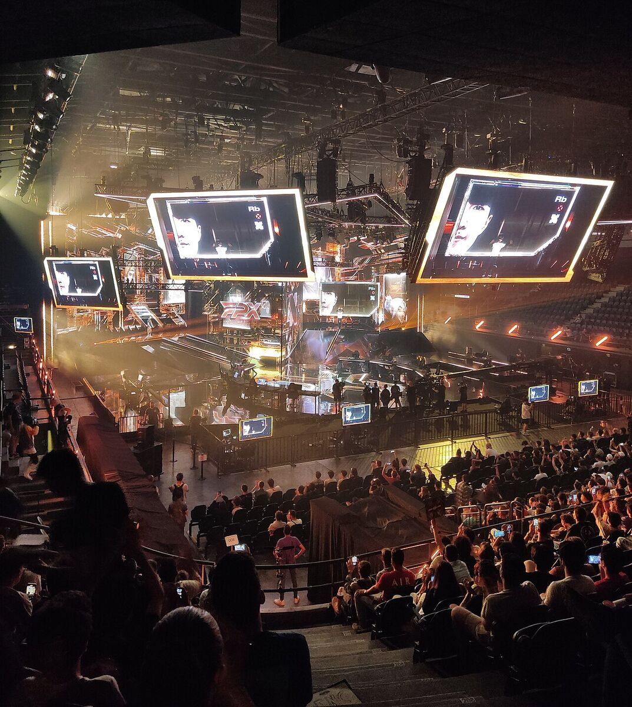

写真なし
Dambi
デュエリスト

Masters Santiago 2026でMVPに選ばれた、攻撃的なプレーが持ち味のデュエリストです。
2021年から長く第一線で活躍してきたベテランのコントローラー(煙で視界をさえぎる役割)です。
2027年はMasters Shanghai 2024の優勝を知るKaronとt3xtureに、DambiとMaKoという実績ある選手が加わった新しい体制です。IGL(試合中に作戦を指示する司令塔)が誰になるかは、まだ発表されていません。
新加入のDambi・MaKo・Rayと残留メンバーがどうかみ合うか、そして17歳になる3月以降のXiestaの起用が注目点です。
2024年にPacific初の国際タイトルを取ったチーム。新メンバーとの化学反応に注目です。
調査日：2026-11-16